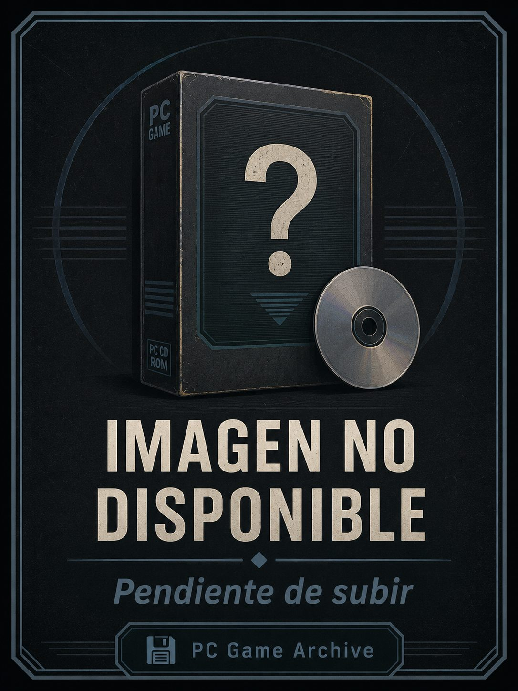

Ficha #000000
Operation Crusader
Operation Crusader es un wargame operacional ambientado en la campaña del Norte de África durante la Segunda Guerra Mundial, centrado en la ofensiva británica de noviembre de 1941 contra las fuerzas del Afrika Korps de Erwin Rommel y sus aliados italianos. Publicado por The Avalon Hill Game Company dentro de su línea de wargames históricos para ordenador, combina mapa hexagonal, órdenes por turnos, gestión de unidades, apoyo aéreo y resolución detallada de combates en un frente donde logística, movilidad y reconocimiento son decisivos. La edición física mostrada corresponde a la versión IBM PC CD-ROM distribuida en España por System 4, con compatibilidad indicada para Windows 95 y documentación localizada al castellano. Su interés archivístico reside en representar la transición del wargame de tablero tradicional de Avalon Hill al formato CD-ROM, manteniendo una fuerte carga documental, escenarios históricos y herramientas para juego contra la IA o contra otro jugador mediante intercambio de órdenes.
- Formato
- Big Box
- Plataforma
- MsDos Win95
- Género
- Estrategia por turnos Wargame Simulación bélica Estrategia histórica Estrategia operacional
- Serie
- Todos Big Box
- Desarrollador
- The Avalon Hill Game Company
- Distribuidor
- The Avalon Hill Game Company, System 4 de España
- EAN
- 0045708101604
Contenido de la edición
- Caja Big Box
- CD-ROM
- Manual
- Mapa del campo de batalla
- Documentación impresa
Preservación
- Protección
- No determinado
- Formato recomendado
- BIN/CUE
- Jugable en virtualización
- Sí
Edición en CD-ROM para IBM PC. Para preservación se recomienda crear imagen completa del disco, preferiblemente BIN/CUE, conservar el manual y el mapa por su valor documental y verificar la ejecución en entorno MS-DOS o Windows 95 virtualizado. No hay evidencia suficiente en la edición mostrada para confirmar un sistema anticopia concreto.